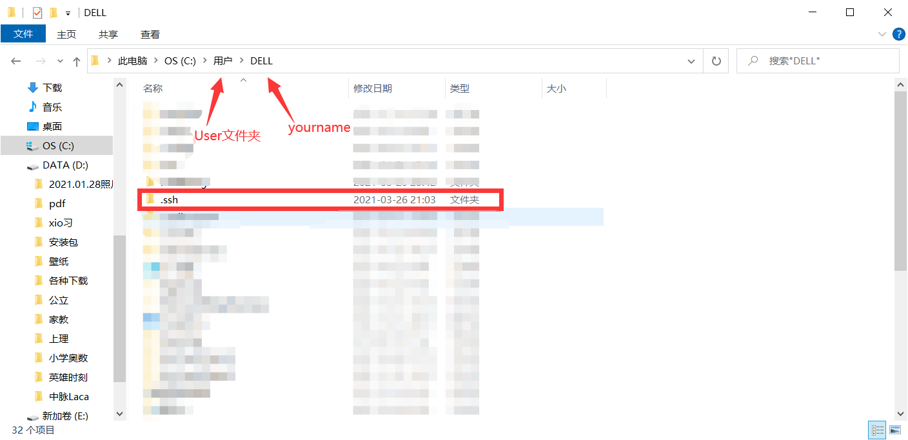
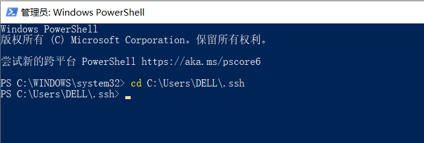
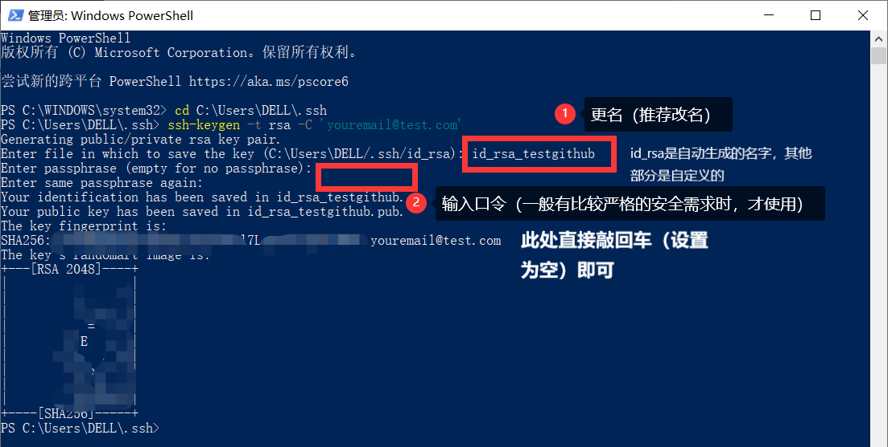
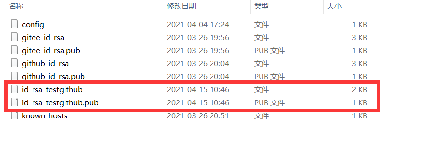
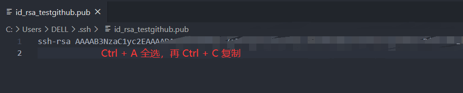
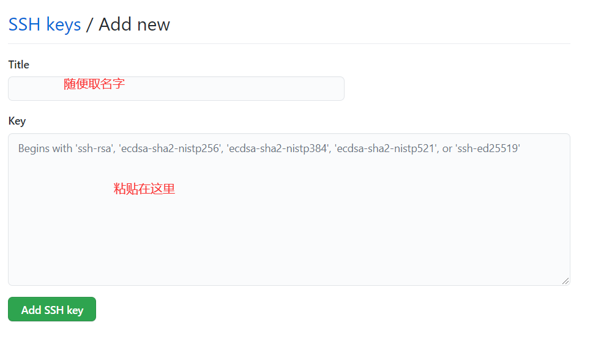
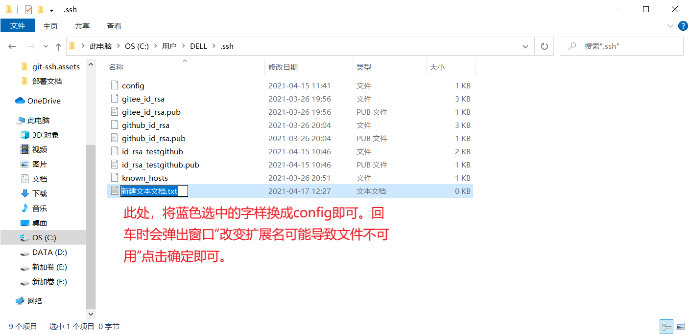
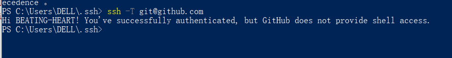
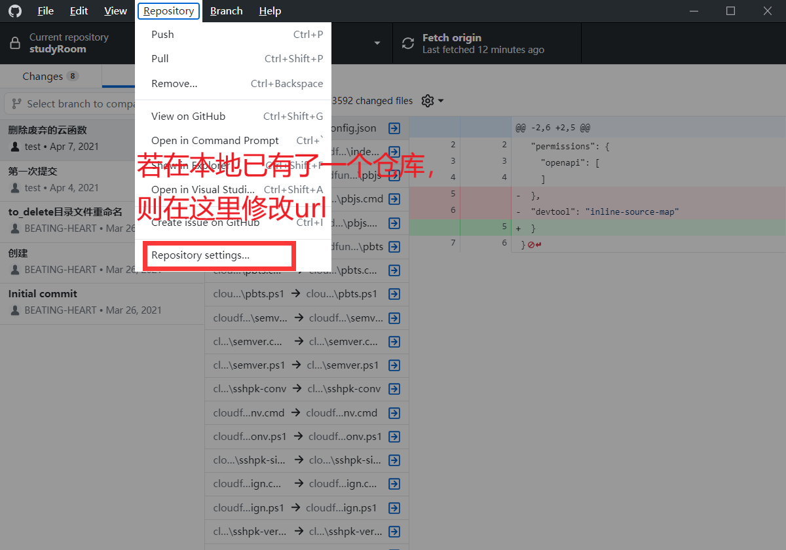
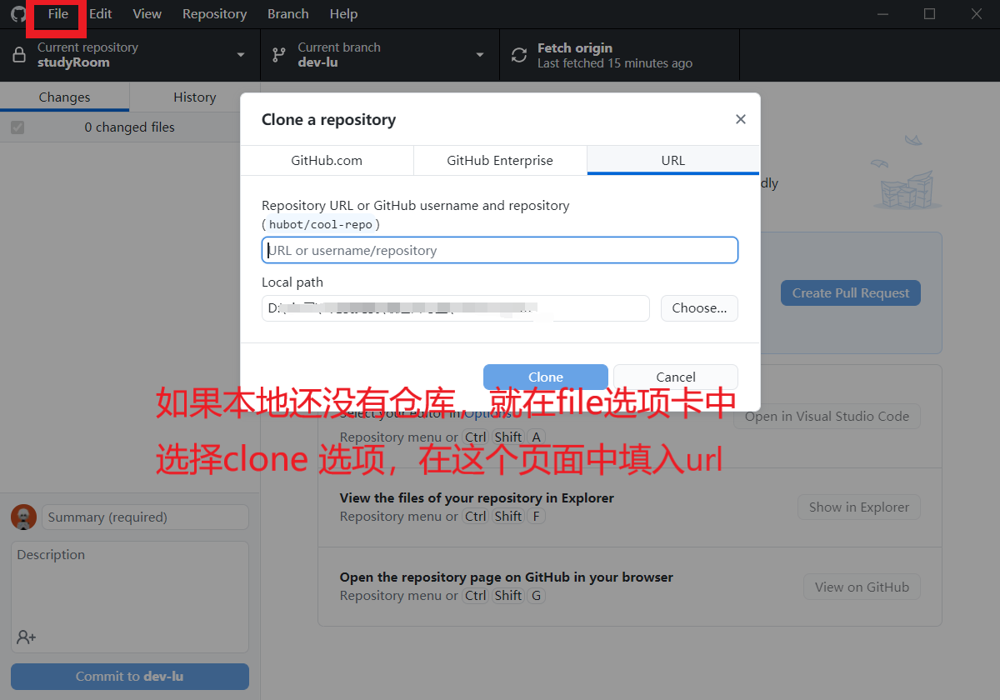

# github 添加 ssh key
通过 ssh key，可以配置 git 的多平台操作。实际上，通过 ssh 协议连接 github，gitee 等平台，相比 https 协议，速度更快，也更稳定。不会受到网络影响。
# 1. 找到 .ssh 文件夹
在当前用户目录 C:\User\yourname 下，找 .ssh 文件夹，如果没有这个文件夹，那么自己新建一个。

# 2. 在 git bash（或 Windows Powershell）中，打开 .ssh 目录

# 3. 生成 SSH 密匙对
在目录中，输入以下命令 ssh-keygen -t rsa -C 'youremail@test.com'

第一步中的更名，是自定义的。推荐改名，默认名字会产生覆盖，并且无法区分用途。
口令可以不设置。
如下，已经生成了测试的 SSH 密钥对（SSH 协议底层使用 RSA 密码算法进行数据加密）

# 4. 将 SSH 公钥上传到 github（gitee 等）代码托管平台
将 .pub 文件（公钥文件）在记事本（或 vscode 等）中打开，将公钥复制。并粘贴到 github 上


# 5. 在 .ssh 文件夹中，配置 config 文件（如果没有 config 文件，就自己新建一个）
实际上，如果有多平台使用需求（比如我有一个 github 仓库，一个 gitee 仓库，公司使用 gitlab 仓库）那么才需要配置 config 文件。否则可以跳过。

注意，需要设置显示文件后缀名，然后连着扩展名一起改掉。可以参考这里：[windows11 显示文件后缀名_vbind 的博客 - CSDN 博客](https://blog.csdn.net/vbind/article/details/124369484#:~:text = 查看文件 查看文件是否有扩展名，没有，后缀名 通过 ctrl%2BE 打开计算机，找到 “工具”—%26gt%3B “文件夹选项”—%26gt%3B “查看”，取消勾选 “隐藏已知文件类型的扩展名”，然后就可以看到文件的扩展名。)
输入下述内容
# github
Host github.com
HostName github.com
PreferredAuthentications publickey
IdentityFile ~/.ssh/id_rsa_testgithub
User git
# gitee
Host gitee.com
HostName gitee.com
PreferredAuthentications publickey
IdentityFile ~/.ssh/gitee_id_rsa
User git
配置文件中的 HostName 是远程仓库的访问地址，这里可以是 IP，也可以是域名。Host 是用来拉取的仓库的别名，配不配置都行。如果 HostName 没配置的话，那就必须把 Host 配置为仓库 IP 地址或者域名，而非别名。
IdentityFile必须要是.ssh文件夹中真实存在的私钥文件
# 6. 测试 ssh 连接
在 git bash 或 powershell 中 输入 ssh -T git@github.com ，若返回结果如图所示，则连接成功。
首次操作连接会询问 Are you sure you want to continue connecting (yes/no)? 填写 yes 即可。
如果没有配好上一步的 config 文件，就会出现 Permission denied (public key)

此处，SSH key 已经配好。以下部分是 SSH key 的使用
# 7. 用 ssh 连接代替 https 连接
将此处的地址复制，打开 github desktop（或 source tree 等）git 图形界面软件，粘贴到仓库地址中。


或者直接使用 git 命令行界面，修改仓库地址
可以打开 git bash 界面，修改仓库的地址
git config --global url."git://".insteadOf https:// |
这样可以使得，你的 .gitconfig 中会多出一行参数设置。
[url "git://"]
insteadOf = https://
这样一来，不管你在终端进行 clone，使用 git:// ，或者 http:// 去访问别人的 repository，两种方式都会默认变成 git:// 的形式进行连接并正常的工作了。
有时候系统可能会提示你防火墙禁止对 git:// 的访问，这时候就只能用 https:// 来访问 repository，这时候可以采用类似地方式，设置到
https://的模式
# 8. 配置仓库的用户名和邮箱（可选）
在本地的仓库目录下，配置该仓库使用的用户名和邮箱。
git config --local user.name 张三 | |
git config --local user.email zhangsan@test.com |
这里的账户可以和我们开始时生成密钥时（ ssh-keygen -t rsa -C 'youremail@test.com' ）的邮箱可以不同，与 git 的 global 邮箱可以不同。（当然也可以相同...... 相同就不用配）
生成密钥的邮箱是使用那个密钥的全局用户（所以一定要设置自己正确的邮箱）。
这里配置的是密钥在某个仓库下的 “局部” 用户。